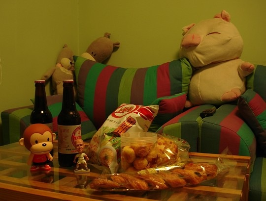
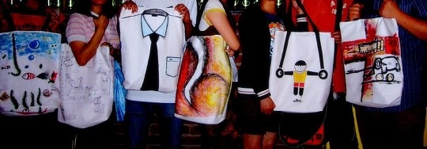
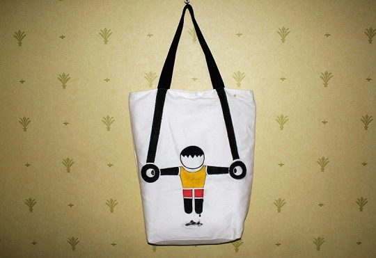

第一个数码相机CANON A85 从去年坏掉到现在都有大半年了，以致一直没有怎么拍过照。上个周末终于狠下心，咬咬牙，从ATM取了几次我们的血汗钱，买了新的相机。虽说内心喜悦，但想想挥霍的血汗钱也是心疼。还好有小禾支持，送了我一个很贵很好看的包：反正以后好好拍就是啦，钱财身外物。

欧洲杯那么快就结束了，感觉这届欧洲杯不是很好看。最后西班牙夺冠，还是比较喜欢的结果。我们记忆中的这届欧洲杯，以下图开始，以下图的下图结束。

最近参加了师弟他们的一个活动，每周大家都聚聚，在学校北门的咖啡店画画玩，成果如下。好久没画过画了。虽是瞎画，不过感觉也挺好，画画的时候觉得时间过得很快，脑里似乎也可以什么都不想。以后老了，希望可以带个画板到处走走。

